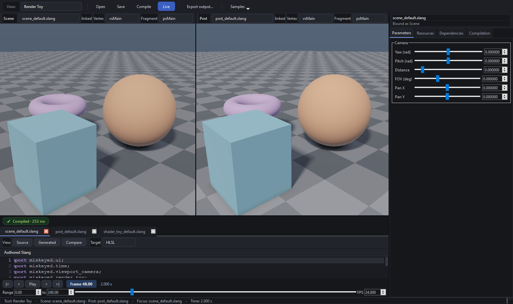

Reflection-driven parameter UI¶
Shaders state semantic UI intent with Slang attributes instead of requiring a C++ control for every uniform:
[UIGroup("Animation")]
[UIName("Speed")]
[UIWidget("slider")]
[UIRange(0.05, 2.0)]
[UIStep(0.01)]
float speed = 1.0;
authored metadata -> Slang reflection -> ParameterDescriptor
-> ShaderParameterModel -> ParameterInspector
Reflection supplies explicit offsets, types, binding information, and user
attributes. ShaderParameterModel preserves compatible values across hot reload.
ParameterInspector groups descriptors and chooses an appropriate native Qt
control. Descriptor order is presentation-only: uniform bytes are packed at their
reflected offsets.
This lets a shader author express range, units, grouping, and widget intent while
C++ retains type-safe model and buffer ownership. Fields from miskeyed.time and
other host contracts are marked host-managed, updated by the application, and
excluded from authored controls.
See shaders/workbench/ui.slang, ShaderParameterModel.cpp, and
ui/ParameterInspector.cpp.
